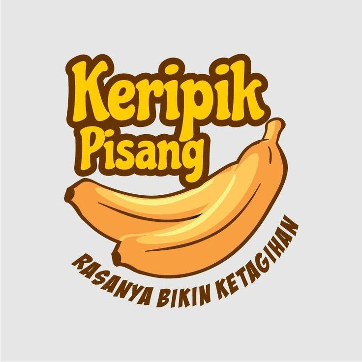
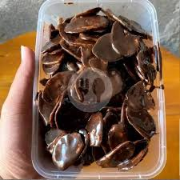

Selamat Datang di Pisangan!
Nikmati kelezatan keripik pisang premium dengan berbagai varian rasa modern yang bikin ketagihan.

Nikmati kelezatan keripik pisang premium dengan berbagai varian rasa modern yang bikin ketagihan.

Dibuat dari pisang berkualitas langsung dari petani lokal pilihan.

Menggunakan bumbu premium tanpa bahan pengawet buatan.

Diproses dengan teknologi modern untuk menjaga kerenyahan maksimal.

Sudah memiliki sertifikat Halal resmi dan izin edar aman.
Keripik pisang paling renyah yang pernah saya coba. Rasa cokelat lumer di mulut dan tidak seret!- Budi, Jakarta
Dapatkan diskon 20% untuk pembelian pertama Anda hari ini.